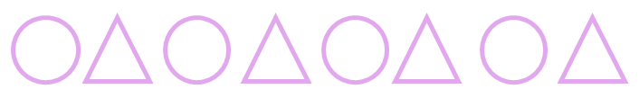

몇 시 알아보기

짧은바늘이 4, 긴 바늘이 12를 가리킬 때 시계는 4시를 나타내고 네 시라고 읽습니다.
"몇 시"를 시계에 나타낼 때에는 긴바늘이 12를 가리키도록 나타냅니다.
몇 시 30분 알아보기
짧은바늘이 1과 2사이, 긴 바늘이 6을 가리킬 때 시계는 1시 30분을 나타내고 한 시 삼십 분이라고 읽습니다.
"몇 시 30분"을 시계에 나타낼 때에는 긴바늘이 6을 가리키도록 나타냅니다.
규칙 찾기

동그라미 - 세모가 되풀이되는 규칙입니다.
규칙을 다른 방법으로 나타내기
(1)동그라미 - 세모가 되풀이되는 규칙입니다.
(2)동그라미와 세모를 0과 1로 바꾸어 나타납니다.
01010101
수 배열 표에서 규칙 찾기
| 1 | 2 | 3 | 4 | 5 | 6 | 7 | 8 | 9 | 10 |
|---|---|---|---|---|---|---|---|---|---|
| 21 | 22 | 23 | 24 | 25 | 26 | 27 | 28 | 29 | 30 |
| 11 | 12 | 13 | 14 | 15 | 16 | 17 | 18 | 19 | 20 |
가로로는 1씩 커지는 규칙입니다.